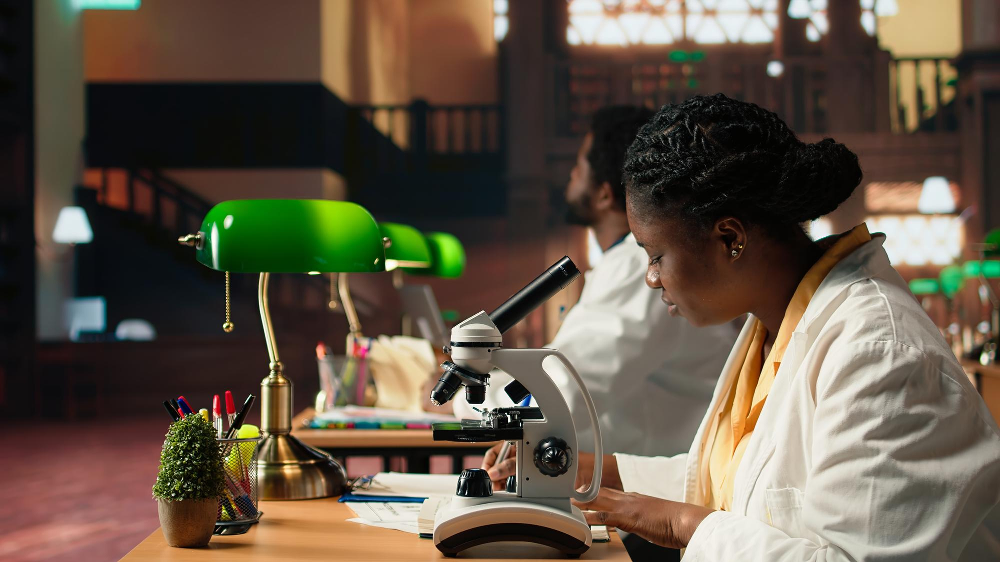

From scholarship
to enterprise.
GRAIN connects African scholars and researchers across the world with the development challenges of their continent — bringing research, advisory expertise and innovation closer to practical solutions.


Why GRAIN exists
Important development questions rarely fit within one discipline or institution. GRAIN's model brings researchers and partners together to define useful questions, produce credible evidence and turn findings into decisions, projects and enterprises.
Our focus is work that responds to African priorities while drawing on knowledge from a worldwide community of scholars and professionals.
Across disciplinesA clear purpose for research and innovation.
The written 2026–2027 strategic direction sets out a vision and mission centred on African scholarship and practical application.
A continent built by its own scholars.
GRAIN connects African scholars and researchers across the world to the development challenges of their continent — building their entrepreneurial capacities, converting their research into bankable projects, and sustaining them as founders and innovators who build from wherever they stand.
One network, connected stages of work.
The strategy describes a coordinating centre and regional chapter model that can bring together scholarship, industry, public institutions and development partners.
Generate useful evidence
Frame relevant questions, strengthen research quality and make knowledge easier to find and use.
Shape decisions and projects
Apply evidence to strategy, feasibility and project development with suitable partners.
Build routes to enterprise
Help promising concepts advance through entrepreneurial learning and practical collaboration.
Principles behind the work
Research excellence
Rigour, integrity and evidence that decision makers can use.
Innovation with purpose
Ideas that respond to real problems and can be tested in practice.
Collaborative leadership
Shared work across disciplines, institutions and regions.
Inclusion and diversity
Room for the voices and experiences of the communities served.
Accountability and transparency
Clarity about evidence, resources, decisions and results.
Pan-African ambition
A global network with Africa's development needs at its centre.
Have an idea worth exploring?
Start a conversation about research, project development or innovation.